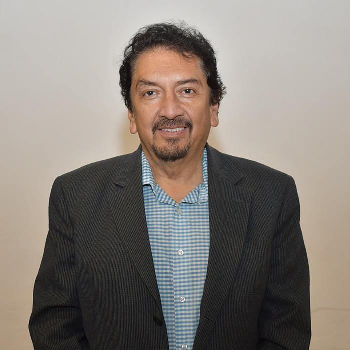

Electrónica Aplicada II
La materia de Electrónica Aplicada II se enfoca en el estudio de los microcontroladores y microprocesadores, sus aplicaciones en sistemas de control e instrumentación electrónica, y el diseño de circuitos digitales programables. Los estudiantes adquirirán habilidades para implementar, simular y optimizar sistemas electrónicos basados en microcontroladores, usando lenguajes de programación como C y herramientas de software y hardware específicas.
Objetivos de Aprendizaje
- Diseñar e implementar sistemas electrónicos digitales basados en microcontroladores.
- Utilizar herramientas de modelado, simulación y programación para resolver problemas de ingeniería electrónica.
- Identificar y aplicar instrucciones y estructuras de control en microcontroladores PIC16F8xx.
- Integrar sensores y actuadores en sistemas de control digital.
- Realizar proyectos prácticos y de laboratorio demostrando comprensión teórica y técnica.
Temario del Curso
-
Tema 1: Sistemas Basados en Microcontroladores
- Introducción a Electrónica Digital
- Álgebra de Boole y compuertas lógicas básicas
- Circuitos integrados y familias lógicas
- Microprocesadores vs Microcontroladores
- Elementos de un microcontrolador y tecnologías de fabricación
- Arquitectura interna de PIC16F88, PIC16F886, PIC16F887
- Herramientas de software y hardware
- Lenguajes de programación: Ensamblador, Basic, C
- Manejo de estructuras condicionales y repetitivas
- Programación de periféricos y timers
- Manejo de memoria EEPROM
- Puertos analógicos y comparadores
- Convertidores ADC/DAC y Modulación PWM
- Integración de sensores y actuadores
- Puertos de comunicación: paralelo, serie
- Protocolos UART, I2C, SPI
- Interfaz con memorias EEPROM y pantallas gráficas
Tema 2: Microcontroladores PIC de Gama Media
Tema 3: Programación Intermedia en C y Aplicaciones
Tema 4: Interfaz de Comunicación y Puertos Seriales


Instructor

Mgr. Carlos López
Jefe de Laboratorio de Ingeniería Mecatrónica